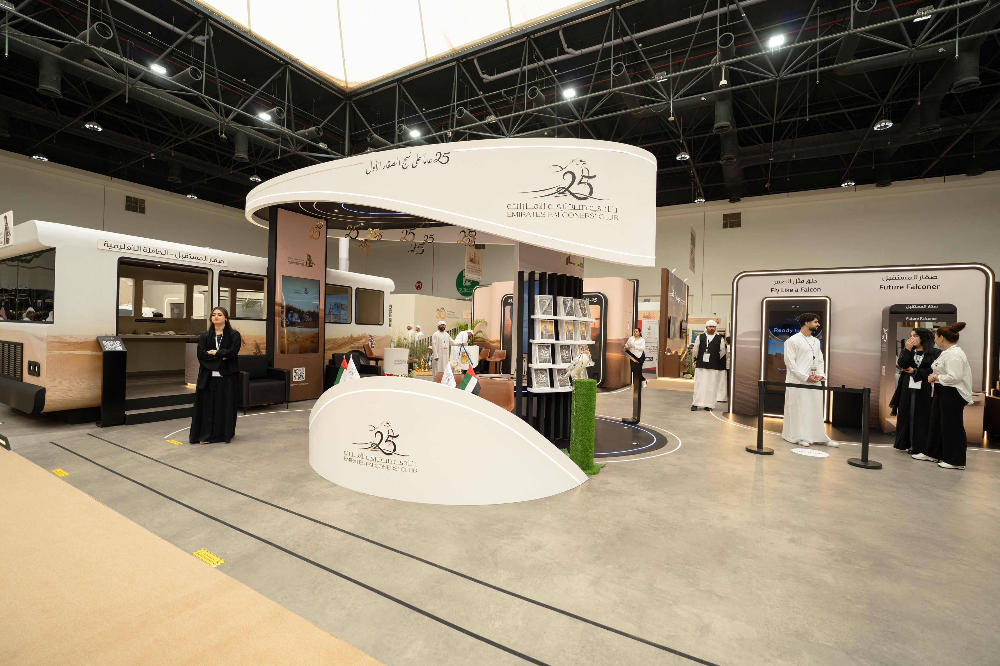
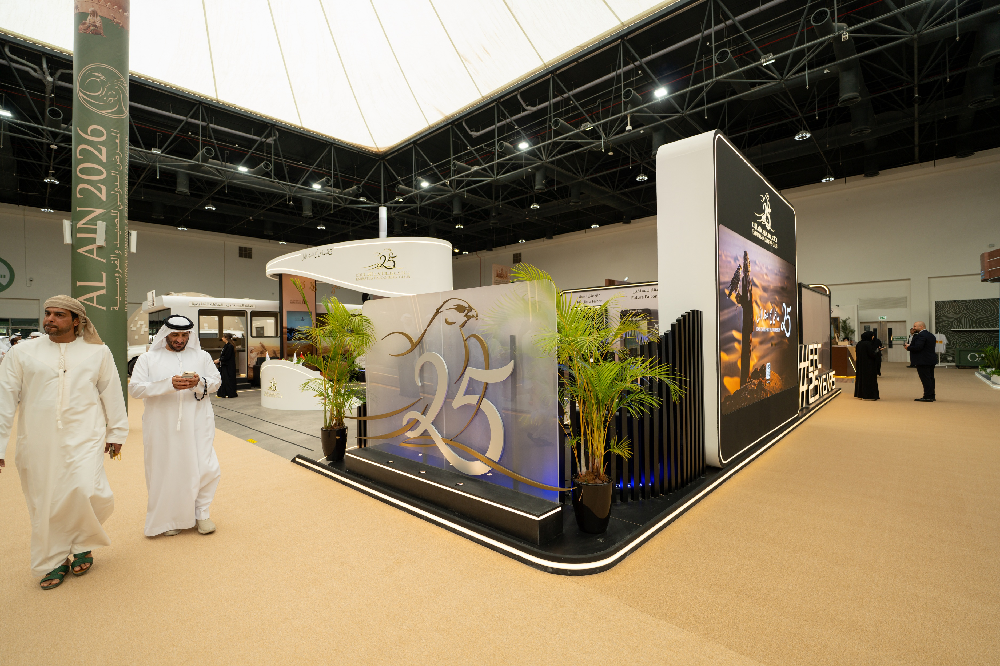
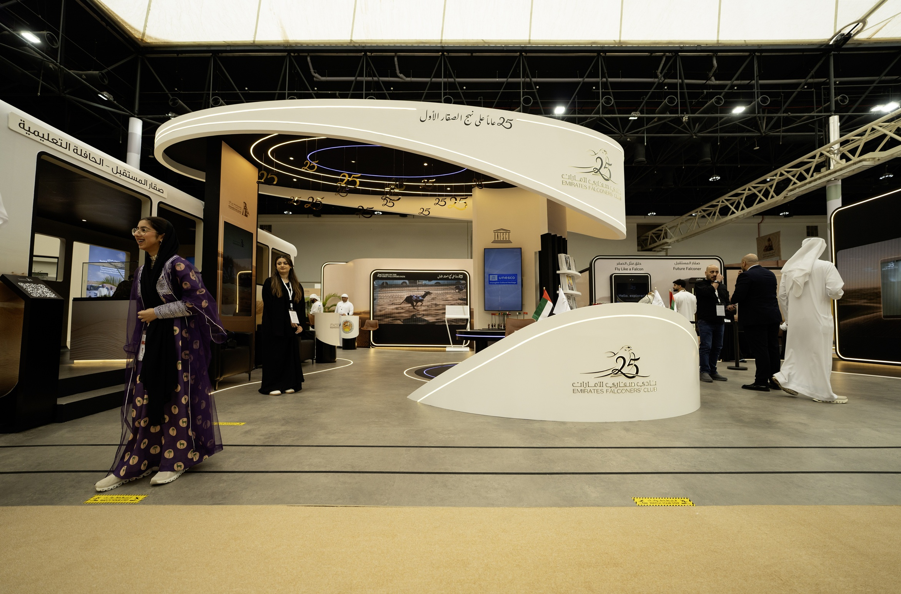

1,020 عارضًا وعلامة تجارية من 50 دولة في مساحة تجمع الموروث الإماراتي وتجهيزات الأنشطة الخارجية
تلتقي تقاليد الصيد والصقارة والفروسية مع أحدث تجهيزات الرحلات البرية في الدورة الثانية من معرض العين الدولي للصيد والفروسية 2026، في مركز أدنيك العين. وأفادت وكالة أنباء الإمارات «وام» بأن اليوم الثالث، الجمعة 27 نوفمبر، سجّل أعلى إقبال للزوّار منذ افتتاح هذه الدورة.
ويجمع المعرض 1,020 عارضًا وعلامة تجارية من 50 دولة، على مساحة تبلغ 35 ألف متر مربع، بزيادة 46% عن الدورة الأولى. وتتوزّع المشاركة على 14 قطاعًا تشمل الصيد والرماية والصقارة والفروسية والإبل والسلوقي، إلى جانب معدات التخييم والمركبات والبيئة والتراث.
وفي أجنحة الصقارة، يتعرّف الزوّار إلى صقور الشاهين والحر والجير، وإلى أدوات التدريب والعناية بالطير، من البرقع والقفاز والملواح إلى أجهزة التتبّع. وبالقرب منها، تعرض الشركات تجهيزات التخييم والكرافانات ومركبات الدفع الرباعي، مع فرصة لمقارنة المعدات ومناقشة استخدامها مع المختصين.
ويمنح البرنامج العائلات والأطفال مساحة للتعلّم والمشاركة، من ورش «قرية الصيادين والفرسان الصغار» إلى عروض التراث والضيافة والقهوة العربية، فيما يقدّم جناح نادي صقّاري الإمارات تجارب خاصة للاقتراب من عالم الصقارة.
وتحضر مبادئ الرفق بالصقر وحماية التنوع البيولوجي ضمن مشاركة اتحاد الإمارات للصقور، الذي يعرّف الزوّار بوثيقة مبادئ الشيخ زايد في الصقارة وبرامجه الموجّهة إلى الناشئة، رابطًا انتقال المهارات بين الأجيال بأخلاقيات الممارسة وصون الموروث.
وتنظّم المعرض مجموعة أدنيك بالشراكة الاستراتيجية مع نادي صقّاري الإمارات، برعاية الشيخ هزاع بن زايد آل نهيان.
في جناح نادي صقّاري الإمارات: 25 عامًا من الصقارة وتجارب للأجيال الجديدة
ومن المشاركين في المعرض نادي صقّاري الإمارات، الذي يحتفي في جناحه بمرور 25 عامًا على تأسيسه، ويقدّم أنشطة تراثية وتعليمية وتفاعلية موجّهة إلى العائلات والشباب.

وتتيح حافلة مدرسة محمد بن زايد للصقارة للأطفال التعرّف إلى أدوات الصقّار وخصائص الصقور وتشريحها. وفي تجربة «حلّق كالصقر»، يستخدم المشاركون حركات أجسامهم وأذرعهم للتحكّم بصقر افتراضي على الشاشة والتحليق فوق بيئة صحراوية إماراتية، مع التعرّف إلى سرعة الطائر ورؤيته ومهاراته الجوية. ويضم الجناح أيضًا ركنًا يحوّل الصور الشخصية، باستخدام الذكاء الاصطناعي، إلى صور تذكارية مستوحاة من تراث الصقارة.
وتتوزّع الأنشطة بين عروض حيّة للصقور والسلوقي العربي، وأدوات الصقارة التقليدية، ومنطقة «الحضيرة والمقناص» التي تستحضر تقاليد الحياة البرية والقهوة والضيافة. وتبرز مبادرة «حُماة الصقارة» دور الشباب في حفظ هذا الموروث ونقل معارفه.

ويوثّق الجناح مسيرة النادي عبر جدار زمني وعروض مرئية وجداريات تتناول إنجازاته في صون الصقارة والمحافظة على البيئة، ومساهمات أبوظبي في هذا المجال، ومحطات مهرجان الصداقة الدولي للبيزرة. كما يعرّف بمجلة «الصقّار» ودورها في نشر المعرفة المتخصصة.
وتشمل المشاركة أنشطة مرتبطة ببطولة السلوقي العربي لموسم 2026–2027، تجمع مسابقة الجمال ومحاكاة الصيد، للتعريف بهذه السلالة وصلتها بالصقارة والحياة الصحراوية. وأكد ماجد علي المنصوري، الأمين العام للنادي، أن المشاركة فرصة لإبراز الأبعاد الثقافية والإنسانية والبيئية لهذا التراث.
المصادر: وكالة أنباء الإمارات «وام»، موقع المعرض، ومجلة صيد. الصور: نادي صقّاري الإمارات.